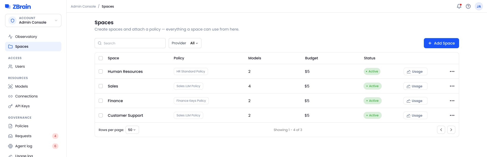
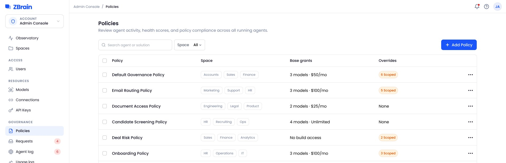
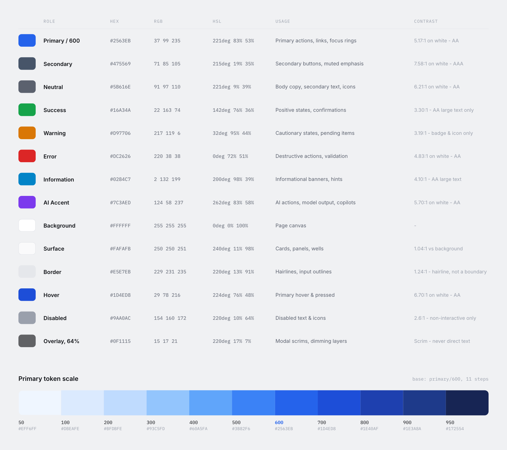
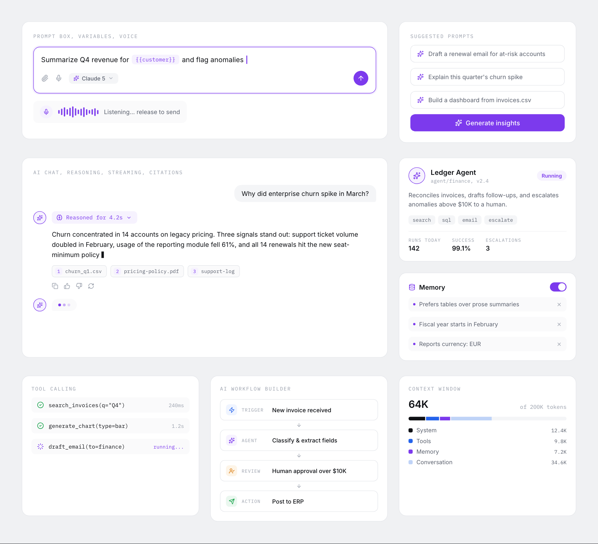

The context
The rules were in Figma. The prototyping had moved to AI chats.
The team explores ideas by prompting. Every new chat had to guess the brand, so every prompt came back a little different, and the older Figma system no longer covered the components the product now used.
A model can generate a screen. It needs the system in its context to generate a ZBrain screen.
The problem
Two chats, two different products
Figma is read by designers. A chat is read by a model. Without the system in its context, each chat invented its own look for the same product. The design task was to put something between them that both can use.
Chat 1“Can you make a Spaces page for our admin console? I need a table with the space name, the policy attached to it, how many models it uses, monthly budget and status. Add search, a provider filter and a button to add a new space.”
Chat 2“Need a Policies screen for the ZBrain admin. Show each policy with the spaces it applies to, its models and monthly limit, and how many overrides it has. Should be easy to filter by space and create a new policy.”
The approach
Update the source, then make it portable
Three artifacts, one set of values.
The Figma system: I built it around the components the product needs today: 120 variables, 86 component variants in 11 families, 17 text styles and 120 icons, released for the admin and user portals. It stays the source of truth.
The Markdown guide: Tokens as copy-ready CSS and Tailwind, the components with their sizes and states, plus a starter prompt and a review checklist.
The HTML reference: All 23 sections rendered as live UI: a visual target for generated screens, built from the same values as the guide.
- TokensPrimitives, semantic, radius, spacing
- ComponentsVariants and states
- NamingOne grammar for everything
- Written rulesRoles, sizes, recipes
- Starter promptPasted into every chat
- Review checklistChecks what comes back
1# ZBrain Design System5.0**Purpose of this file:** a single reference an AI model (or a person) reads before generating any screen, prototype or component, so every output looks like the same product.⋯11## 0. Instructions for the model151. **Use only the values in this file.** No hex code, font size, spacing value, radius, shadow or duration may appear in output unless it is listed here. …162. **Blue means action.** `--action-primary` (#2563EB) is used for primary buttons, links, selection and focus, and for nothing decorative.173. **Purple is for AI only.** `--ai` (#7C3AED) marks machine agency: AI actions, model output, agents, copilots and the *Processing* status. Never use it for anything a human does.⋯115 --text-primary: #0F1115; /* 18.90:1 on white */125 --border-default: #E5E7EB; /* card, table and outline-button edges, table row lines, dividers */130 --action-primary: var(--color-blue-600);139 --ai: var(--color-violet-600); /* 5.70:1 on white */⋯736## 11. Review checklist for generated screens740- [ ] Only hex values, sizes, radii, shadows and durations from this file741- [ ] Blue only on actions, links, selection and focus; purple only on AI743- [ ] One primary button per region; the destructive action is last and confirmed746- [ ] Radius matches the family (8 controls, 12 menus and tables, 16 cards, 24 dialogs)
Design decisions
Five rules a model can resolve, not just read
Each one removes a kind of guesswork from a generated screen.
- Tokens are the contractNamed values, never a guessed hex or size.
- One naming grammarPeople and models call a thing by the same name.
- Constraints over instructions8-pt grid, 17 type styles, 10 radii, 6 elevations.
- Color carries meaningBlue acts, purple is AI, status means state.
- Accessibility in the tokensContrast, focus and targets decided once.
In practice
A repeatable starting point for each AI chat
Every chat starts from the same rules, and every result is checked against the same source.
Set up once: the Figma system becomes the Markdown guide, and the guide goes into the AI project folder.
Every prototype: a prompt in the project, a prototype generated from the shared tokens and components, then a review against the HTML reference and Figma.
Until it ships: anything that needs work goes back as the next prompt, with the same rules. Approved work is delivered as the final result, with the functionality in focus.
![A Claude Code session in ~/zbrain/prototypes. The guide is attached with @ZBrain-Design-System.md and the prompt is the same Spaces request from the problem: a table of spaces with policy, models, budget and status, plus search, a provider filter and an add button. Claude reads the 733-line guide, works through five to-dos from its data-table recipe, writes spaces.html from the guide's tokens, opens it, and reports the review checklist: no values outside the guide, one primary button, 52px rows, focus rings and all three states. It offers the Policies page next.](assets/ds/proof-session.webp?v=7)
The result
Two chats, one product
The same two pages, built in Claude with the guide attached. These are the prototype screenshots, straight from the chats.
Chat 1 · guide attachedSpaces

Chat 2 · guide attachedPolicies

Inside Figma, too: Figma’s own AI reads the same library. Asked to update the tabs and table on the Models page, it searched the components, styles and variables first, then kept the original UI.

What changed
One quality bar across the product team
The guide is where the team’s AI prototypes start, and every generated screen is checked against the same list.
- ~80% accurategenerated screens, as they come out of an AI chat with the guide attached
- ~60% less timespent fixing the design of generated screens
- 27 peopleon the ZBrain product team prototype from the same guide
- 12 checkson one review list for every generated screen, from color roles to touch targets
Where it falls short
What didn’t work, and what still doesn’t
The guide only removes guesswork where it is written down.
The first table spec was generic: overline headers, a shadowed card and an invoices example, not the table ZBrain uses. I rewrote it from the admin console’s own table, and every data view now starts from that one.
Some families have no spec yet: Navigation is in the inventory but not written down, the chart docs are still in progress, and the AI agent card and workflow builder are in beta. These are the parts a chat is most likely to invent.
The model checks its own work: Claude reports the review checklist itself, so a person still compares each screen with the HTML reference and Figma before it is accepted.
The system
Twenty-three sections, three shown in full
Four groups: foundations, components, AI patterns and the rules that hold them together. 120 variables and 86 component variants. The three sections below are screenshots of the live UI; the other twenty live in the HTML reference.
Color system
Semantic first, decorative never
Color in the system is functional. One blue carries every action, purple is reserved exclusively for AI, status colors carry state, and everything else is neutral. Each role ships with a contrast recommendation so accessible pairings are the default, not a review comment.

AI components
Purple means machine agency
AI work gets its own visual grammar. Purple marks machine agency, and every agent shows its reasoning, the tools it used and its sources.

What I learned
Designing for a second kind of reader
A model audits what was never written down: anything the team knew but hadn’t documented showed up as drift.
Naming is the interface: a component nobody can name precisely can’t be requested or reused.
Fewer legal values beat more guidance: a bounded scale gives a model clearer choices than “stay on brand”.